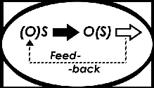

|

- Очерки психологии мировоззрения как основы просветительской практики ( Comments )
- От ничтожности к сопоставимости с Мирозданием или к вопросу о смысле существования человека ( Comments )
- Нобелевская лекция И.П.Павлова 'О русском уме' ( Comments )
- Проект "Бизнес, власть, общественность и СМИ в российской благотворительности" ( Comments )
- Дело Виталия Бунтова ( Comments )
- Дело Егора Новиковского ( Comments )
- Все мы сыны и дочери Человечества, но не собственность возомнивших о себе… ( Comments )
(все новости...)


Мини-газета "Петля обратной связи" - №5(8) - июнь 2008 |
||
|
|
|
 |
Таков универсальный «закон обратных связей» |

МИНИ«Петля обратной связи» ГАЗЕТА
Июнь № 5(8) 2008 год
Орган правозащитно - просветительской группы «Обратная связь»
( Правозащитно - просветительская группа «Обратная связь» существует с 1987 г.)
- Содержание выпуска:
- 1. Тарас Шевченко о судьбе народов Кавказа (поэма «Кавказ»)
- 2. Николай Гумилев о счастье, которое не построишь на горе, причинённом другим людям (стихотворение «Загробное мщение»)
- 3. Митя Братвсембродский . Текст песни «Ты!»
- 4. М. Бутырбродский. «О слугах народа»
- Тарас Григорьевич Шевченко
-
Поэма «КАВКАЗ»
Перевод Павла Антокольского
Искреннему моему Якову де Бальмену
Кто даст главе моей воду и очесем моим источник слез, и плачуся и день и нощь о побиенных. Иеремии: 9-1
За горами горы, тучами повиты,
засеяны горем, кровию политы.
Спокон веку Прометея
там орел карает,
что ни день долбит он ребра,
сердце разбивает.
Разбивает, да не выпьет
крови животворной -
вновь и вновь смеется сердце
и живет упорно.
И душа не гибнет наша,
не слабеет воля,
ненасытный не распашет
на дне моря поля.
Не скует души бессмертной,
не осилит слова,
не охает славы Бога,
вечного, живого.
Не нам с тобой затеять распрю!
Не нам дела свои судить!
Нам только плакать, плакать, плакать
и хлеб насущный замесить
кровавым потом и слезами.
Кат издевается над нами,
а правде - спать и пьяной быть.
Так, когда ж она проснется?
И когда ты ляжешь
опочить, усталый боже.
Жить нам дашь, когда же?
Верим мы творящей силе
Господа - владыке.
Встанет правда, станет воля.
И тебя, великий,
будут славить все народы
вовеки и веки,
А пока - струятся реки…
кровавые реки!
За горами горы, тучами повиты,
засеяны горем, кровию политы.
Вот там-то милостивцы мы
отняли у голодной голи
все, что осталось - вплоть до воли, -
и травим…И легло костьми
людей муштрованных немало.
А слез, а крови? Напоить
всех императоров бы стало.
Князей великих утопить
в слезах вдовиц. А слез девичьих,
Ночных и тайных слез привычных,
А материнских горьких слез!
А слез отцовских. Слез кровавых!
Не реки - море разлилось,
пылающее море! Слава
борзым, и гончим. И псарям,
и нашим батюшкам-царям
Слава!
Слава синим горным кручам,
подо льдами скрытым.
Слава витязям великим,
богом не забытым.
Вы боритесь - поборете,
Бог вам помогает!
С вами, правда, с вами слава
и воля святая!
Чурек и сакля - все твое,
не выпрошенное мольбами,
за хлеб, за жалкое жилье
не окуют тебя цепями.
У нас же…Грамотеи мы,
читаем господа глаголы!..
И от казармы и тюрьмы
вплоть до высокого престола
мы ходим в золоте - и голы.
К нам в обученье! Мы сочтем,
научим вас, хлеб-соль почем,
мы христиане; храмы, школы,
вся благодать, сам бог у нас!
Глаза нам только сакля колет:
Зачем она стоит у вас,
не нами данная; и то,
что солнце светит вам бесплатно,
не нами сделано! Зато
чурек не кинем вам обратно,
как псам! И хватит. Мы не турки -
Мы христиане. В Петербурге
мы малым сыты!.. А зато
когда б вы с нами подружились,
то многому бы научились!
У нас же и простор на то, -
одна сибирская равнина…
А тюрем сколько! А солдат!
От молдаванина до финна
на всех языках все молчат:
все благоденствуют! У нас
Святую библию читает
Святой чернец и поучает,
что царь свиней когда-то пас,
с женой приятеля спознался,
убил его. А как скончался,
так в рай попал! Вот как у нас
пускают в рай! Вы неучены,
Святым крестом непросвещенны.
Но мы научим вас!.. Кради,
рви, забирай -
и прямо в рай,
да и родню всю приводи!
Чего мы только не умеем?
Считаем звезды, гречку сеем,
браним французов. Продаем
или за карточным столом
проигрываем крепостных -
людей крещеных… но простых.
Мы не плантаторы! Не станем
мы краденое покупать,
мы поступаем по закону!
По апостольским заветам,
любите вы брата,
суесловы, лицемеры,
господом прокляты!
Возлюбили вы не душу -
шкуре братней рады.
И дерете по закону:
дочке на наряды,
на житье сынкам побочным,
жене на браслетки.
А себе на что, не знают
ни жена, ни детки!
За кого же был ты распят,
сын единый божий,
в искупленье нам? За слово
истины?.. Иль, может,
чтоб глумленье не кончалось?
Так оно и сталось!
Часовни, храмы, да иконы,
и жар свечей, и мирры дым,
и перед образом твоим, неутомимые поклоны.
За кражу, за войну, за кровь
ту, братскую, что льют ручьями, -
вот он, даренный палачами,
с пожара краденный покров!..
Просветились! И решаем
свет открыть и этим
показать им солнце правды -
сим незрячим детям!
Все покажем! Только дайтесь
в руки нам, и тут же -
как прочнее строить тюрьмы,
плесть нагайки туже,
кандалы ковать, носить их
в сибирскую стужу, -
все поймете, лишь отдайте
родимое взгорье.
остальное мы забрали -
и поле и море!
И тебя загнали, друг и брат единый,
Яков мой хороший! Не за Украину -
за ее тирана довелось пролить
столько честной крови. Довелось испить
из царевой чаши царевой отравы!
Друг мой незабвенный, истинный и правый!
Ты на Украине душою витай,
вместе с казаками мчись над берегами,
старые курганы в степи озирай.
Закрепи слезами дружбу с казаками,
меня из неволи в степи поджидай.
А покуда - мои думы,
лютые невзгоды,
буду сеять я. Пусть крепнут
в споре с непогодой.
Украинский тихий вечер
принесет с росою
к дорогому другу думы
братскою слезою.
И когда на них ты взглянешь
и читать их станешь,
вновь курганы, степи, горы
и меня помянешь.
- 18 ноября 1845 года в Переяславе
- Шевченко, Тарас. С.С. в четырёх томах
- / Под ред.И.Я. Айзенштока и Ф.Я. Приймы. Библиотека журнала «Огонёк» -М.: изд. «Правда», т.1., 1977 г., с.с.347-351
Комментарий:
Я все более убеждаюсь в том, что этнофобия - результат вытесняемого страха (раньше я наивно думал - больной совести - но совести-то ещё не выработалось) насильника (или субъекта, отождествляющего себя с насильником - империей, Ермоловым, Сталиным и пр.).
Страха перед возмездием (ведь чует и кошка, чьё мясо съела) за те преступления, которые совершила Россия против других народов: тех же финнов, украинцев, ночхо (чеченцев) и др. Насильники ненавидят своих жертв.
***
2. Николай Гумилев о счастье, которое не построишь на горе, причинённом другим людям
И. Семибратова, одна из составителей сборника «Судьба поэтов серебряного века» (М.: «Книжная палата», 1993), писала в предисловии к подборке стихотворений замечательного русского поэта Николая Гумилева о том, что одним из его главных озарений была идея «о невозможности счастья человека, если оно строится на чьем-то несчастье».
Наверное, поэтому поэт Гумилев презирал и пролетарскую революцию с её погромами и «эксами», поставленными на интернациональную основу, за что его и убил Ленин. Убил бы и Сталин…
Описанная в публикуемом ниже стихотворении связь событий, построенная на принципе обратной связи, в современной науке называется положительным деструктивным ответом на деструктивное прямое воздействие.
Загробное мщенье
Как-то трое изловили
на дороге одного
и жестоко колотили,
беззащитного, его.
С переломанною грудью
и с разбитой головой,
он сказал им: «Люди, люди,
что вы сделали со мной?
Не страшны ни Бог, ни черти,
но клянусь в мой смертный час -
притаясь за дверью смерти,
сторожить я буду вас.
Что я сделаю, о Боже,
с тем, кто в эту дверь вошел!..»
И закинулся прохожий
захрипел и отошел.
Через год один разбойник
умер, и дивился поп,
почему это покойник
всё никак не входит в гроб.
Весь изогнут, весь скорючен,
на лице тоска и страх,
оловянный взор измучен,
капли пота на висках.
Два других бледнее слали
стираного полотна.
Видно, много есть печали
в царстве неземного сна.
Протекло четыре года,
Умер, наконец, второй.
Ах, не видела природа
дикой мерзости такой!
Мертвый глухо выл и хрипло,
ползал по полу, дрожа,
на лице его налипла
мутной сукровицы ржа.
Уж и кости обнажились,
смрад стоял - не подступить,
всё он выл, и не решались
гроб его заколотить.
Третий, чувствуя тревогу
нестерпимую, дрожит
и идёт молиться Богу
в отдалённый тихий скит.
Он года хранит молчанье
и не ест по сорок дней,
исполняя обещанье,
спит на ложе из камней.
Так он умер, нетревожим;
но никто не смел сказать,
что пред этим чистым ложем
довелось ему видать.
Все бледнели и крестились,
повторяли: «Горе нам!» -
и в испуге расходились
по трущобам и горам.
И вокруг скита пустого
тёрн поднялся и волчцы…
Не творите дела злого -
мстят жестоко мертвецы.
Гумилёв Николай - русский поэт, убитый в 1921 году чекистами
«Престол красоты» (Поэзия отрокам) -М.: «СПАС», 1994. с.с.42-43
3. Ты!
Ты говоришь: «Путин - да, Россия - вперёд!»
и одобряешь власть, что убивает народ:
гордый народ -
чеченский народ,
горский народ -
ичкерийский народ.
Тебе спасения нет от грязных мыслей твоих,
тебе прощения нет, и тебя бог не спасёт.
Презренья фунт тебе за клок земли,
что, в общем, на хрен тебе, но жадность сосёт.
Он будет жить, жить, жить, -
чеченский народ,
он будет жить, жить, жить, - ичкерийский народ.
Не можешь ты сложить простую мысль:
чеченский гордый народ никуда не уйдёт.
Он будет жить, жить, жить
на родимой земле,
а твоя совесть гнить, гнить
в тебе, в тебе.
Ты говоришь: «Путин - да, Россия - вперёд!»
и одобряешь власть, что убивает народ: гордый народ -
чеченский народ,
горский народ,
ичкерийский народ.
Он будет жить, жить, жить
на родимой земле,
а твоя совесть гнить, гнить, гнить
в тебе, в тебе…
Он будет жить, жить, жить, жить, жить -
ЖИТЬ…
7 августа 2004 Митя Братвсембродский
4. О слугах народа
Россия лишь тогда свой путь изменит,
когда наступит светлая пора
и в важных кабинетах «мусора»
портрет Дзержинского на Гумилёва сменят:
«Пора, голубчики, пора!»
Москва. 22 декабря 2005 года.
Митя Бутырбродский
Материалы группы «Обратная связь» и Комитета
антивоенных действий Вы можете получать по четвергам
во время пикета «Против войны в Чечне, военных преступлений и терроризма на Северном Кавказе и во
всей России» с 17.30 до 19.00 на площадке перед Новопушкинским сквером ( м.Пушкинская, ул.
Тверская, на противоположной стороне от памятника А.С.Пушкину.). Более полная информация о причинах, потерях, жертвах и следствиях войны размещена:
на сайте www.voinenet.ru и сайте группы
«Обратная связь» www.feedbackgroup.narod.ru
На нашем сайте вы сможете также познакомиться с научными (философскими, психологическими, социологическими, политологическими),
публицистическими и художественными работами.
Их объединяет сфокусированность на проблемах
отношений между людьми во всевозможных (в том числе,
и в межнациональном, и в межклассовом) аспектах.
Желаем Вам мира в сердце
и мирного неба над головой!
Составитель и комментатор Бродский Дмитрий
Главный редактор: Батенкова Лена
Издательская группа «МНОБ-лист».
Объем: 4 стр. Тираж на 20 июня 2008 г.- 100 экз.
Цена: понимание
E-mail miplibrary@mtu-net.ru
***
«Каждый имеет право на свободу <…>
убеждений и свободу искать, получать и
распространять информацию и идеи
любыми средствами и независимо
от государственных границ».
Всеобщая декларация прав человека
Редакция не возражает против перепечатки
любого из материалов издания